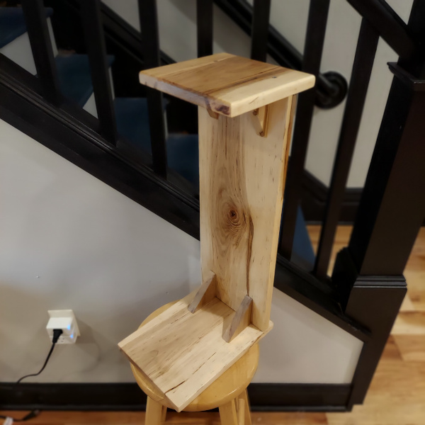

This page will be dedicated to some of my woodworking projects.
During the pandemic I began looking for small improvements I could make around the house. I was having so much fun, that it branched into a fun hobby that I have quite enjoyed. I started by making a small cage to keep my dog Archer out of our compost bin, but then I got more tools and have found many ways to use them. Some of the projects I have taken on so far are:

Compost Cage
My dog, Archer, was very interested in the compost bin, so we tried piling bricks and stones around it. He just knocked them over, so I decided to build something sturdier. This was the simple and quick solution I came up with to keep him out, while allowing us humans access.

Bathroom Cabinet
My next project was for Z. She wanted a little cabinet for our first floor half bath. So I designed and built this and hung it on the wall. It's a pine box with poplar doors and top.

Solid Cherry Desktop
Working from home meant that I needed a better desk. Uber allowed me to purchase a sit / stand deskframe, but I wanted to make the top myself. I found S3S cherry on sale and used the table saw to finish the boards. I joined them and sanded them smooth, before applying a tung oil finish. It's 5.5 feet long by 31 inches deep.
Little Free Library
This was a birthday present for Z. She always loved seeing these around the neighborhood, so I decided to make one for her. I spent a lot of time designing this, since it would be loaded with books and have to support the weight. I also wanted a see-through door, to make it more welcoming. I ended up making the body from pine, and bolting it to the brick wall of the porch. The door is a pine frame with a piece of clear plexiglass for the window.

Garage Door
This door to our garage has needed to be replaced for a while. The old one was falling apart but its a unique size, making a replacement hard to find. So I decided to build one. This door was made to be functional and cheap, so it is far from perfect. It is solid and fits the space pretty well.
Night Stand
We moved some furniture around at Z's parents house, and it meant we needed a very small night stand. I decided to make a "C" shaped stand, so the base could extend under the bed and the top could be within reach. I used a piece of Ambrosia Maple I had laying round and made this piece.There are also several projects that I have begun working on:
- A storage shelf for our entry way
- A bed side table
- New microwave trim
So please be patient with me as I like to keep quite busy!